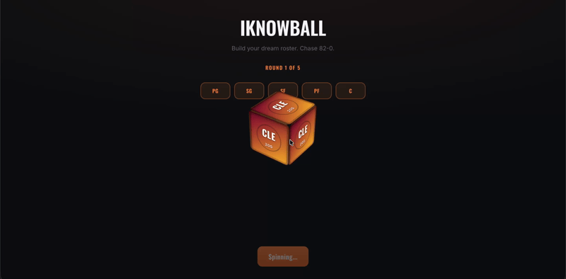

Sports · Web Game · Solo Build
I enjoyed playing a game until the UX started to frustrate me, so I built and shipped my own version, then kept refining it through real playtester feedback across 15+ shipped improvements.

Overview
Sneakers and basketball go hand in hand, and I've always enjoyed draft-and-guess basketball games, the kind where you pull a random real team and see how far you can take it. 82-0.com is the one I kept coming back to, until the same handful of teams and eras kept showing up over and over, undermining the entire premise of a "random draft" game. So I built and shipped iknowball: draft a 5-man NBA roster one position at a time from randomly rolled real teams across six decades, then get scored on how that roster would perform across an 82-game season.
Research
Research happened in two rounds. First, four unmoderated interviews (Maddy, Arnold, Justin, and Nicky) spanning basketball knowledge levels from none to expert, testing version 1.0: a simple randomization ticker, a 10-player pool per spin, and an end-of-round breakdown of the score, best pick, and a better alternative. Then, after the first wave of fixes shipped, a 20-person structured playtest run by Kevin and his rec basketball league, the first round with real quantitative data and the first head-to-head test against 82-0 itself.
Asked why, unprompted, of the 7 who preferred iknowball over 82-0, they converged on the same four reasons:
Findings
Raw notes, grouped into the themes that repeated across all three rounds. Quotes are lightly cleaned up from shorthand field notes, not paraphrased.
Process
Foundation already in place going into this research: four scoring pillars (Scoring, Rebounding, Defense, Team Chemistry), a rule-based post-game breakdown, tier cards shown only after the draft, and a full 168-roster data audit. Everything below is what changed after real players got their hands on it.
By the Numbers
Static weights only, no cross-game memory, so the same 2-3 eras dominated every single game regardless of what came before.
Measured over an identical 300-game / 1,500-pick simulation on production code.
Final Results
iknowball is a shipped, live product: real teams across six decades, real per-season stats, and a scoring model that explains itself in plain language after every round.
Takeaway
Anyone who plays 82-0 could tell you it repeats itself too much. The harder part was building an alternative good enough that real players preferred it, then discovering my own fix had quietly reintroduced a narrower version of the exact bug I built the whole game to solve, and fixing that too.
A game you actually play is the best source of product instinct you'll ever have. I didn't need a research brief to know 82-0 was repetitive. I needed the discipline to build the fix, ship it, and keep listening once real people started playing it.